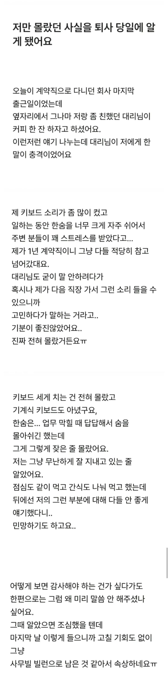

사회적 지능이 몹시 떨어짐
저렇게 말할정도면
손목각도 최대한 위로 올려서 따닥따닥 치는 사람들있는데
그정도인가보네 ㅋㅋㅋㅋㅋ
감사합니다 라고 받아들여 이런 말 하는 사람 없다
계약직이니까 저때 말해준거 이해는 감
근데 저렇게 글쓰면서 이게맞냐 하는거 보면
작성자도 좀 꼬롬하네
유일하게 이해되는 한숨충: 한숨 크게 쉬고 내가 사고친거 해결해주는 사람 ㅋㅋ
매너와 에티켓이라는 요소는 분명 존재하긴 히는데
여긴 심신미약자들 왜케 많냐 ㅋㅋㅋ
나는 내가 안좋은 버릇 있으면 빨리 말해줬으면 좋겠어... 저렇게 마지막에 알려주면 그동안 있었던 일들 때문에 너무 창피할듯
남들으라고 하는게 아니라 스트레스받으면 심호흡을 통해서 스트레스 낮추려고 자동반사처럼 나옴 나도 그래... 사람 앞에서는 안하려고 노력해도 쉽지 않더라
끝까지 생각해서 말해준 대리 나쁜놈 만드네
난 바쁘몀 자꾸 인상을 쓰게됨… 고칠려도해고 그냥 컴퓨터할때도 그렇고 나도 모르게
인상을 쓰게됨; 사람들이 화난줄 알음 고치고 싶은데 안되네 ㅠㅠ
평소에 친근한, 친절한 타입의 사람이였으면 일찍 말해줬겠지. 지 혼자 선긋고 왕따 자처하며 무표정으로 다녔나보네
그래도 마지막에라도 말해줬으면 그냥 알려줘서 고맙다 하면 됨 사회에서 저런거 말해주는 사람은 고마운 사람 축에 들어감
에효효효효효효효효효효 ㅇㅈㄹ 계속 하는 새끼
코를 풀던지 약을 처먹던지 계속 코먹으면서 마무리로 끕 끕 거리던 새끼 다 죽여버리고 싶었는데